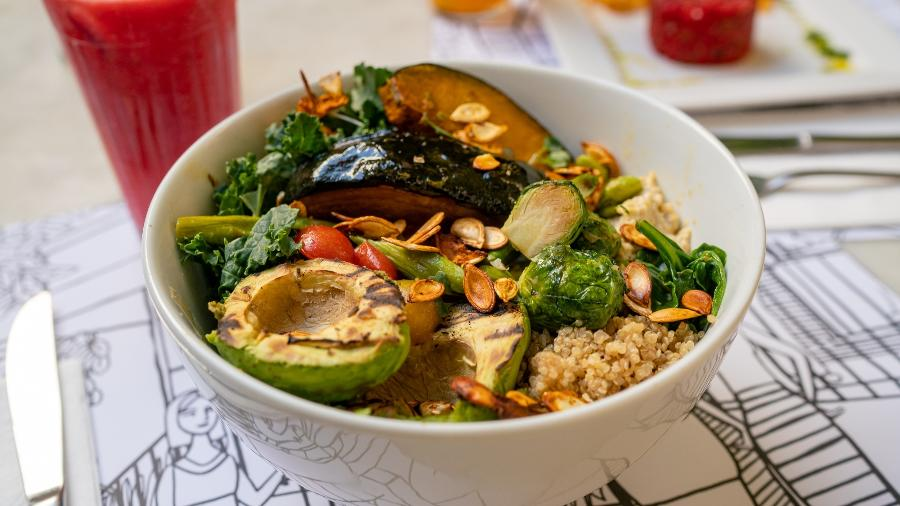
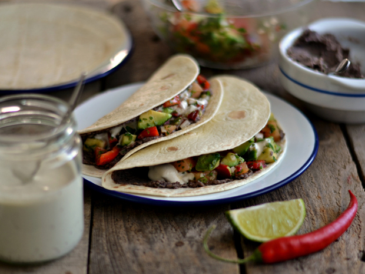
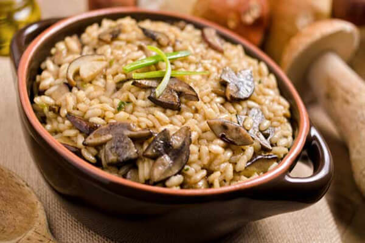

Lasanha de Berinjela e Abobrinha
Ingredientes:
- 2 berinjelas grandes
- 2 abobrinhas médias
- 1 xícara de molho de tomate
- 1 cebola picada
- 2 dentes de alho picados
- 1 xícara de espinafre fresco
- 1 xícara de tofu esfarelado
- 2 colheres de sopa de azeite de oliva
- Sal e pimenta a gosto
- Manjericão fresco para decorar
Modo de Preparo:
- Corte as berinjelas e as abobrinhas em fatias finas.
- Em uma frigideira, refogue a cebola e o alho no azeite até dourar.
- Adicione o espinafre e cozinhe até murchar. Misture o tofu esfarelado e tempere com sal e pimenta.
- Em uma forma, coloque uma camada de molho de tomate, uma camada de berinjela, uma camada de abobrinha e uma camada da mistura de espinafre e tofu.
- Repita as camadas até terminarem os ingredientes, finalizando com molho de tomate.
- Asse em forno pré-aquecido a 180°C por 30 minutos.
- Decore com manjericão fresco antes de servir.
Curry de Grão-de-Bico e Batata Doce
Ingredientes:
- 1 xícara de grão-de-bico cozido
- 2 batatas doces médias, cortadas em cubos
- 1 cebola picada
- 2 dentes de alho picados
- 1 pedaço de gengibre ralado (cerca de 1 colher de chá)
- 1 lata de leite de coco
- 2 colheres de sopa de curry em pó
- 1 colher de chá de cúrcuma
- 1 colher de chá de cominho
- Sal e pimenta a gosto
- Coentro fresco para decorar
Modo de Preparo:
- Em uma panela grande, aqueça um pouco de óleo e refogue a cebola, o alho e o gengibre até dourarem.
- Adicione o curry, a cúrcuma e o cominho e mexa bem.
- Acrescente as batatas doces e o grão-de-bico e misture.
- Adicione o leite de coco, tempere com sal e pimenta e deixe cozinhar até as batatas estarem macias.
- Decore com coentro fresco antes de servir.
Salada de Quinoa com Legumes e Molho Tahine
Ingredientes:
- 1 xícara de quinoa
- 2 xícaras de água
- 1 pepino picado
- 1 pimentão vermelho picado
- 1 cenoura ralada
- ½ xícara de ervilhas frescas ou congeladas
- ¼ xícara de salsinha picada
- ¼ xícara de cebolinha picada
Molho Tahine:
- 2 colheres de sopa de tahine
- Suco de 1 limão
- 1 dente de alho picado
- 1 colher de sopa de azeite de oliva
- Sal e pimenta a gosto
- Água para diluir
Modo de Preparo:
- Cozinhe a quinoa na água até que esteja macia e a água tenha evaporado. Deixe esfriar.
- Em uma tigela grande, misture a quinoa com os legumes e as ervilhas.
- Para o molho, misture todos os ingredientes e adicione água aos poucos até atingir a consistência desejada.
- Despeje o molho sobre a salada e misture bem.
- Decore com salsinha e cebolinha antes de servir.
Tacos de Feijão Preto com Abacate
Ingredientes:
- 1 lata de feijão preto cozido
- 1 cebola roxa picada
- 2 dentes de alho picados
- 1 colher de chá de cominho
- 1 colher de chá de páprica
- Sal e pimenta a gosto
- Tortilhas de milho
- 1 abacate fatiado
- Coentro fresco picado
- Limão para espremer
Modo de Preparo:
- Em uma frigideira, refogue a cebola e o alho até dourar.
- Adicione o feijão preto e os temperos e cozinhe por alguns minutos.
- Aqueça as tortilhas e recheie com o feijão preto, fatias de abacate e coentro fresco.
- Esprema um pouco de limão sobre os tacos antes de servir.
Estrogonofe de Cogumelos

Ingredientes:
- 500g de cogumelos variados (shitake, shimeji, champignon)
- 1 cebola picada
- 2 dentes de alho picados
- ½ xícara de molho de tomate
- ½ xícara de creme de castanha de caju (ou outro creme vegetal)
- 2 colheres de sopa de mostarda Dijon
- 1 colher de sopa de molho inglês vegano
- Sal e pimenta a gosto
- Salsinha picada para decorar
Modo de Preparo:
- Em uma panela, refogue a cebola e o alho até dourar.
- Adicione os cogumelos e cozinhe até que estejam macios e tenham liberado seus líquidos.
- Acrescente o molho de tomate, a mostarda, o molho inglês e misture bem.
- Adicione o creme de castanha de caju, tempere com sal e pimenta e cozinhe por mais alguns minutos.
- Decore com salsinha picada antes de servir.
Estrogonofe Vegano de Grão-de-Bico e Palmito
Ingredientes:
- 1 xícara de grão-de-bico (cru)
- 4 folhas de louro
- 1 xícara de cogumelo paris fresco
- 2 colheres (sopa) de azeite
- 1 colher (sopa) de semente de mostarda
- 6 dentes de alho picados
- 1 cebola grande picada
- 1 vidro de palmito cortado em rodelas
- 2 xícaras de polpa de tomate
- 1/2 xícara de água
- Cebolinha a gosto
- 200 g de creme de leite de caju
Modo de Preparo:
- Deixe o grão-de-bico de molho por 12 horas. Cozinhe com as folhas de louro até ficarem macios. Reserve.
- Em uma panela, aqueça o azeite e refogue a cebola, o alho e a semente de mostarda até dourar.
- Adicione o cogumelo e cozinhe até que esteja macio.
- Junte o grão-de-bico, o palmito e a polpa de tomate. Cozinhe por alguns minutos.
- Adicione o creme de leite de caju e a água, e cozinhe por mais alguns minutos.
- Tempere com sal e pimenta a gosto e finalize com cebolinha antes de servir.
Quiche de Legumes com Queijo
Ingredientes:
- 1 massa de torta (pode ser comprada pronta ou feita em casa)
- 1 xícara de queijo cheddar ralado
- 1 xícara de queijo feta esfarelado
- 1/2 xícara de leite
- 3 ovos
- 1 xícara de brócolis picados
- 1/2 xícara de cenoura ralada
- 1/2 xícara de cebola picada
- 2 dentes de alho picados
- Sal e pimenta a gosto
- 1 colher de sopa de azeite
Modo de Preparo:
- Preaqueça o forno a 180°C.
- Em uma frigideira, aqueça o azeite e refogue a cebola, o alho, os brócolis e a cenoura até ficarem macios. Tempere com sal e pimenta.
- Em uma tigela grande, bata os ovos com o leite. Adicione os queijos e os legumes refogados, misturando bem.
- Despeje a mistura sobre a massa de torta em uma forma.
- Asse por 35-40 minutos, ou até o centro estar firme e a crosta dourada. Deixe esfriar um pouco antes de servir.
Risoto de Cogumelos e Queijo Parmesão
Ingredientes:
- 1 xícara de arroz arbóreo
- 200g de cogumelos (como champignon ou shiitake) fatiados
- 1/2 xícara de queijo parmesão ralado
- 1 cebola picada
- 2 dentes de alho picados
- 1/2 xícara de vinho branco seco
- 4 xícaras de caldo de legumes quente
- 2 colheres de sopa de azeite de oliva
- Sal e pimenta a gosto
- Salsa fresca picada para decorar
Modo de Preparo:
- Em uma panela grande, aqueça o azeite e refogue a cebola e o alho até ficarem macios.
- Adicione os cogumelos e cozinhe até que estejam dourados.
- Adicione o arroz arbóreo e refogue por alguns minutos até que o arroz esteja levemente tostado.
- Despeje o vinho branco e cozinhe até que o líquido tenha evaporado.
- Adicione o caldo de legumes, uma concha de cada vez, mexendo sempre até que o líquido seja absorvido antes de adicionar mais.
- Quando o arroz estiver cremoso e al dente, retire do fogo e misture o queijo parmesão. Ajuste o sal e a pimenta.
- Sirva quente, decorado com salsa fresca.